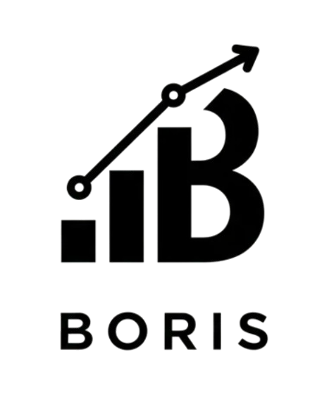

Savannah, GA, 31405 | (912) 484-9479 | marionmanalo682@gmail.com
I am a recent graduate from the University of Georgia (UGA) with a B.S. in Computer Science and a certificate in Artificial Intelligence. I am passionate about how technology continues to help solve our world's problems, and I am particularly interested in how AI and data will help shape and move the world forward. As I look to begin my career, I am eager to learn more and to gain hands-on experience through opportunities where I can serve society with the fruits of my work.
University of Georgia, Athens, GA, Bachelor of Science in Computer Science, Undergraduate Certificate in Artificial Intelligence, May 2026 Courses: Data Structures, Algorithms, Artificial Intelligence, Data Mining, Software Engineering, Web Programming, Systems Programming, Applied Linear Algebra, Data Science/ML I, Human-Computer Interaction, Ethics and AI
